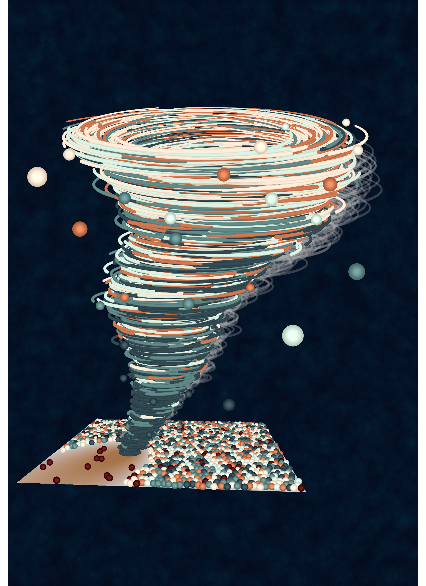

Last updated: 2021-11-15
Checks: 7 0
Knit directory: Turati_NatCancer_2021/
This reproducible R Markdown analysis was created with workflowr (version 1.6.2). The Checks tab describes the reproducibility checks that were applied when the results were created. The Past versions tab lists the development history.
Great! Since the R Markdown file has been committed to the Git repository, you know the exact version of the code that produced these results.
Great job! The global environment was empty. Objects defined in the global environment can affect the analysis in your R Markdown file in unknown ways. For reproduciblity it’s best to always run the code in an empty environment.
The command set.seed(20200627) was run prior to running the code in the R Markdown file. Setting a seed ensures that any results that rely on randomness, e.g. subsampling or permutations, are reproducible.
Great job! Recording the operating system, R version, and package versions is critical for reproducibility.
Nice! There were no cached chunks for this analysis, so you can be confident that you successfully produced the results during this run.
Great job! Using relative paths to the files within your workflowr project makes it easier to run your code on other machines.
Great! You are using Git for version control. Tracking code development and connecting the code version to the results is critical for reproducibility.
The results in this page were generated with repository version d37d61d. See the Past versions tab to see a history of the changes made to the R Markdown and HTML files.
Note that you need to be careful to ensure that all relevant files for the analysis have been committed to Git prior to generating the results (you can use wflow_publish or wflow_git_commit). workflowr only checks the R Markdown file, but you know if there are other scripts or data files that it depends on. Below is the status of the Git repository when the results were generated:
Ignored files:
Ignored: .Rhistory
Ignored: .Rproj.user/
Ignored: bulkRNA/
Ignored: data/bulk4_counts.rda
Ignored: data/bulk4_dds.rda
Ignored: data/paper_palette.rda
Ignored: data/signatures.rda
Ignored: output/deseq2-mini_bulk4_dds.3pts-Treated-vs-Untreated.rds
Ignored: output/deseq2-mini_bulk4_dds.pt1-Treated-vs-Untreated.rds
Ignored: output/deseq2-mini_bulk4_dds.pt12-Treated-vs-Untreated.rds
Ignored: output/deseq2-mini_bulk4_dds.pt13-Treated-vs-Untreated.rds
Ignored: output/deseq2-mini_bulk4_dds.pt2-Acutely treated-vs-Chronically treated.rds
Ignored: output/deseq2-mini_bulk4_dds.pt2-Acutely treated-vs-Never treated.rds
Ignored: output/deseq2-mini_bulk4_dds.pt2-Chronically treated-vs-Never treated.rds
Ignored: output/deseq2-mini_bulk4_dds.pt2-Relapse-vs-Never treated.rds
Ignored: output/deseq2-mini_bulk4_dds.pt2-Treatment withdrawn-vs-Never treated.rds
Ignored: output/fgsea_results.RDS
Ignored: output/figures/ExtFig5a_pca_3patients.pdf
Ignored: output/figures/ExtFig5b_pca_treatment_response.pdf
Ignored: output/figures/Fig5C_fgsea_selected_signatures.pdf
Ignored: output/figures/ItemS2.pdf
Ignored: output/tables/ExtFig5a_bulkRNAseq_data.xlsx
Ignored: output/tables/ExtFig5b_bulkRNAseq_data.xlsx
Untracked files:
Untracked: analysis/data-scRNAseq.Rmd
Untracked: data-raw/all_counts.rounded.txt.gz
Untracked: data-raw/all_counts.txt.gz
Note that any generated files, e.g. HTML, png, CSS, etc., are not included in this status report because it is ok for generated content to have uncommitted changes.
These are the previous versions of the repository in which changes were made to the R Markdown (analysis/index.Rmd) and HTML (docs/index.html) files. If you’ve configured a remote Git repository (see ?wflow_git_remote), click on the hyperlinks in the table below to view the files as they were in that past version.
| File | Version | Author | Date | Message |
|---|---|---|---|---|
| Rmd | d37d61d | Javier Herrero | 2021-11-15 | wflow_publish(files = c(“code/cover.R”, “analysis/index.Rmd”)) |
| html | e02ea6e | Javier Herrero | 2021-08-16 | Build site. |
| html | b6f5b35 | Javier Herrero | 2021-08-13 | Build site. |
| html | 537463a | Javier Herrero | 2021-08-13 | Update site |
| Rmd | 42e5864 | Javier Herrero | 2021-08-13 | Init workflowr website |
| html | 42e5864 | Javier Herrero | 2021-08-13 | Init workflowr website |
This site provides access to the code used in the analysis of:
Comparison of intratumor genetic heterogeneity in cancer at diagnosis and relapse suggests that chemotherapy induces bottleneck selection of subclonal genotypes. However, evolutionary events subsequent to chemotherapy could also explain changes in clonal dominance seen at relapse. We therefore investigated the mechanisms of selection in childhood B-cell precursor acute lymphoblastic leukemia (BCP-ALL) during induction chemotherapy where maximal cytoreduction occurs. To distinguish stochastic versus deterministic events, individual leukemias were transplanted into multiple xenografts and chemotherapy administered. Analyses of the immediate post-treatment leukemic residuum at single-cell resolution revealed that chemotherapy has little impact on genetic heterogeneity. Rather, it acts on extensive, previously unappreciated, transcriptional and epigenetic heterogeneity in BCP-ALL, dramatically reducing the spectrum of cell states represented, leaving a genetically polyclonal but phenotypically uniform population, with hallmark signatures relating to developmental stage, cell cycle and metabolism. Hence, canalization of the cell state accounts for a significant component of bottleneck selection during induction chemotherapy.
source("code/cover.R")
sessionInfo()R version 3.6.3 (2020-02-29)
Platform: x86_64-apple-darwin15.6.0 (64-bit)
Running under: macOS Catalina 10.15.7
Matrix products: default
BLAS: /Library/Frameworks/R.framework/Versions/3.6/Resources/lib/libRblas.0.dylib
LAPACK: /Library/Frameworks/R.framework/Versions/3.6/Resources/lib/libRlapack.dylib
locale:
[1] en_GB.UTF-8/en_GB.UTF-8/en_GB.UTF-8/C/en_GB.UTF-8/en_GB.UTF-8
attached base packages:
[1] stats graphics grDevices utils datasets methods base
other attached packages:
[1] scales_1.1.0 RColorBrewer_1.1-2 forcats_0.5.0 stringr_1.4.0
[5] dplyr_1.0.0 purrr_0.3.3 readr_1.3.1 tidyr_1.0.2
[9] tibble_2.1.3 ggplot2_3.3.1 tidyverse_1.3.0 workflowr_1.6.2
loaded via a namespace (and not attached):
[1] Rcpp_1.0.4 lubridate_1.7.4 lattice_0.20-40 assertthat_0.2.1
[5] rprojroot_1.3-2 digest_0.6.25 R6_2.4.1 cellranger_1.1.0
[9] backports_1.1.5 reprex_0.3.0 evaluate_0.14 httr_1.4.1
[13] pillar_1.4.3 rlang_0.4.11 curl_4.3 readxl_1.3.1
[17] rstudioapi_0.11 data.table_1.12.8 whisker_0.4 car_3.0-8
[21] rmarkdown_2.1 labeling_0.3 foreign_0.8-76 munsell_0.5.0
[25] broom_0.5.5 compiler_3.6.3 httpuv_1.5.2 modelr_0.1.6
[29] xfun_0.16 pkgconfig_2.0.3 base64enc_0.1-3 htmltools_0.5.1.1
[33] tidyselect_1.1.0 rio_0.5.16 crayon_1.3.4 dbplyr_1.4.2
[37] withr_2.4.2 later_1.0.0 grid_3.6.3 nlme_3.1-145
[41] jsonlite_1.6.1 gtable_0.3.0 lifecycle_1.0.1 DBI_1.1.0
[45] git2r_0.26.1 magrittr_1.5 zip_2.2.0 carData_3.0-3
[49] cli_3.0.0 stringi_1.4.6 farver_2.0.3 fs_1.3.2
[53] promises_1.1.0 xml2_1.3.2 ellipsis_0.3.2 generics_0.0.2
[57] vctrs_0.3.8 openxlsx_4.1.4 tools_3.6.3 glue_1.3.2
[61] hms_0.5.3 abind_1.4-5 yaml_2.2.1 colorspace_1.4-1
[65] rvest_1.0.2 knitr_1.28 haven_2.2.0